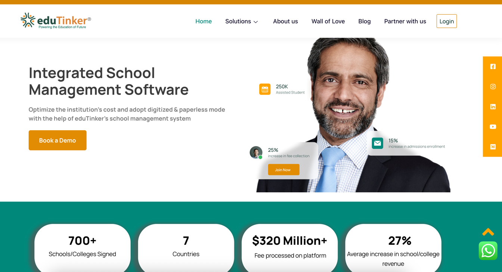
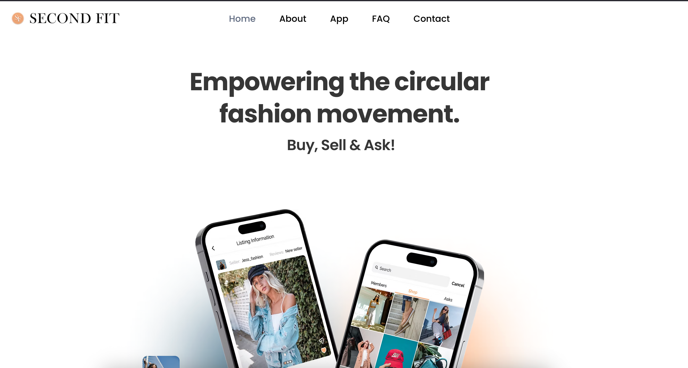
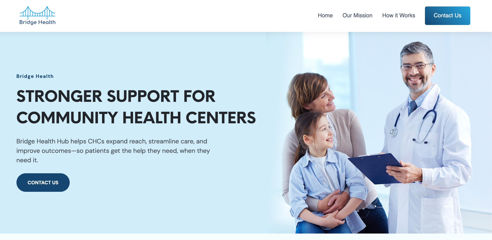
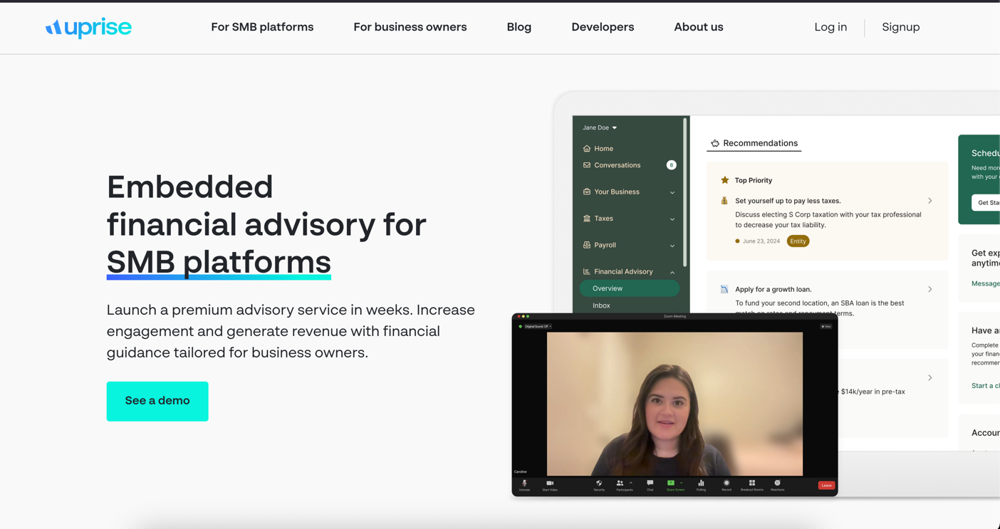
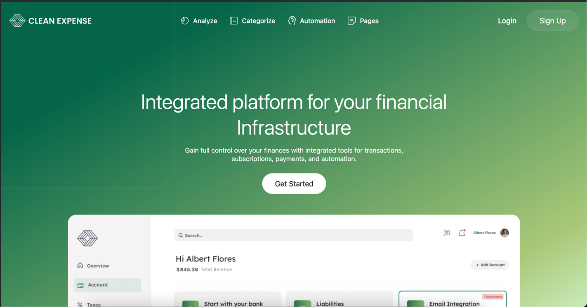
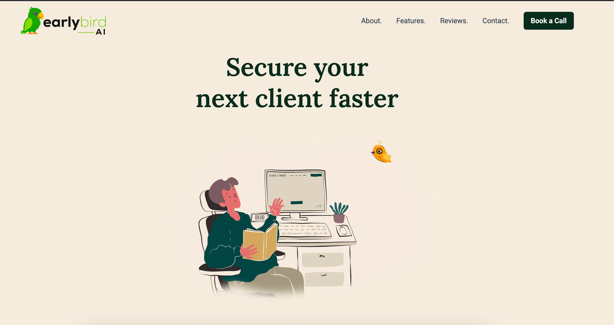

AWS / GCP Infrastructure
Secure, scalable and cost-efficient cloud architecture designed for performance and reliability.
Available for new engagements
I'm Abinash Varadhan, a Senior DevOps Engineer with 9+ years of experience building secure, scalable infrastructure on AWS and GCP, automating delivery with CI/CD, and running production Kubernetes platforms.
Production platform
Trusted stack
Services
I help teams release software faster and with fewer errors by automating workflows, managing cloud infrastructure, and keeping systems secure and reliable.
Secure, scalable and cost-efficient cloud architecture designed for performance and reliability.
Repeatable, version-controlled environments with Terraform, Ansible and CloudFormation.
Automated build, test and deploy pipelines with Jenkins, GitHub Actions and GitLab CI for faster delivery.
Production Kubernetes clusters managed with Helm and GitOps to deploy and scale containerized apps.
Right-sizing and architecture reviews that cut cloud spend without sacrificing performance or security.
Prometheus, Grafana, Loki and ELK for metrics, centralized logging, dashboards and alerting.
Selected work
A selection of platforms where I owned the cloud infrastructure, delivery pipeline and operations.

E-learning platform on scalable AWS infrastructure with automated deployments.

E-commerce platform with Kubernetes orchestration and GitOps deployment.

Healthcare platform on GCP serverless architecture with auto-scaling.

Finance management app with IaC-managed infrastructure and zero-downtime deployments.

Micro-finance app with containerized microservices and centralized logging.

AI microservices platform on EKS with service mesh and GitOps workflows.
Experience
Hands-on across infrastructure, security, reliability and delivery, from startups to regulated environments.
About
A DevOps engineer experienced in designing, automating and operating cloud infrastructure on AWS, GCP and Azure. I focus on CI/CD, Kubernetes, Infrastructure as Code and observability to deliver secure, scalable and high-performing systems.
Testimonials
Great experience working with Abinash. He understood the requirements quickly, communicated clearly throughout the project, and delivered quality work on time. Professional, reliable, and easy to collaborate with.
Abinash did an excellent job. I sincerely appreciate the responsiveness and design talent he applied to this project. He smoothly migrated the entire application to AWS with zero downtime and automated the deployment with CI/CD.
Abinash did a very good job deploying our microservice-based application on ECS Fargate and enabled smooth deployments with Jenkins. He also centralized logging with Loki, helping us cut the CloudWatch costs we had been fighting for so long.
Working with Abinash was a game changer for maintaining our website and servers. He ensured our servers are secure and patched periodically, and implemented backup automation which is crucial for recovering our data when it matters.
Contact
Share a few details about your goals and requirements so our first conversation is focused and productive.